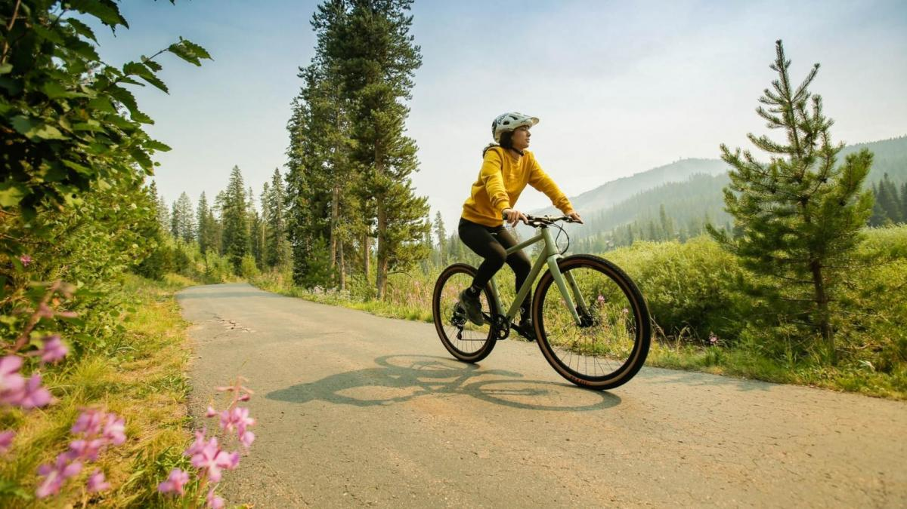

Beneficios del uso de la bicicleta

Cada vez son más las ciudades que apuestan por propuestas ambientales que mejoren ya no solo el día a día de la ciudad si no que piensen en un futuro conjunto para el planeta. En esos casos entra el uso de la bicicleta.
Ayuda a reducir los niveles de contaminación ambiental y sus niveles de monóxido y dióxido de carbono, hidrocarburos y otras partículas que favorecen la contaminación del aire.
La bicicleta como medio transporte ayuda al medio ambiente
Ya sea para recorrer trayectos cortos, puede beneficiar tu salud, el cuidado del medio ambiente y hasta tu bolsillo, pues no gastarías en gasolina o mantenimiento de tu coche.
De esa manera contribuyes no solo a tener una ciudad con aire más limpio, si no además menos ruido a tu alrededor. Pero miremos una a una las grandes ventajas de ir en bicicleta.
Gastar menos dinero en combustible te permitirá ahorrar
Los viajes cortos son los más contaminantes, ya que el motor no está correctamente aclimatado. Cuando el motor funciona en “frío” requiere más combustible ya que la quema no se produce de forma eficiente.
Esto no sólo afecta tu bolsillo, sino que aumenta la emisión de sustancias dañinas.
Mejora tu estado físico sin emitir gases tóxicos
Ir en bicicleta es muy beneficioso para la salud. En tan sólo diez minutos de actividad a un ritmo menor a 16km/h, una persona que pesa 60kg habrá quemado 40 calorías y una persona de 100kg habrá consumido casi 70.
Además reduce los niveles de estrés y mejora tu estado de ánimo, ayudándote también a combatir el colesterol.
Otros beneficios de salud son:
•Ayuda a mejorar la coordinación motriz
•Mejora el sistema respiratorio y cardiaco
•Reduce el riesgo de sufrir infarto o problemas cerebrovasculares
•Tonifica los músculos
Conseguir un aire más puro para tu ciudad es posible
Contaminantes como el monóxido de carbono y los óxidos de nitrógeno y azufre limitan la fotosíntesis en las plantas, proceso que consume dióxido de carbono y emite oxígeno, purificando de aire.
Los residuos de aceite y combustibles dejados por los autos se filtran al ciclo del agua cuando hay una tormenta, contaminando las fuentes de agua.
La bici es un medio de transporte limpio. Todos debemos preocuparnos por la conservación del medio ambiente y esta es una opción de movilidad no contaminante perfecta.
Otros artículos que te podrían interesar:

La reutilización ocupa el segundo puesto en la jerarquía de residuos, después de la prevención y por encima del reciclaje ya que es importante porque hace que la primera vida útil sea más larga, evitando la necesidad de reciclar y ahorrando energía, materiales y dinero en el proceso. Seguir Leyendo...

Las energías renovables son fuentes de energía basadas en el aprovechamiento de los recursos naturales: sol, viento, agua o biomasa vegetal o animal. Se caracterizan por no utilizar combustibles fósiles, sino recursos naturales que pueden renovarse indefinidamente. Seguir Leyendo...